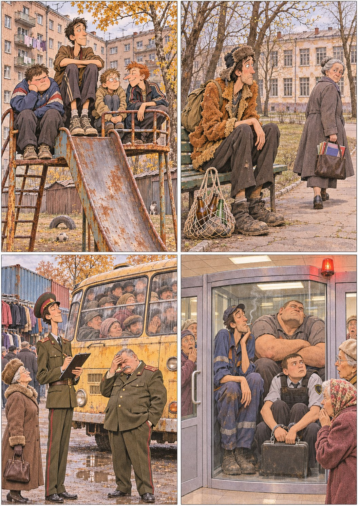

От автора

Эту книгу я рассказывал задолго до того, как сел её писать. Рассказывал за столом, в курилках, в электричках, в комментариях на Пикабу, в маленькой книжке, которую когда-то выпустил сам и которую прочитали в основном друзья. Каждая история в ней жила отдельно, со своим началом, своей развязкой и своей обязательной фразой в конце, после которой слушатели смеялись. Мне всегда казалось, что это просто байки. Потом я сложил их подряд, по годам, и увидел, что это не байки, а жизнь. Не самая путная, если верить одной учительнице математики. Но другой у меня не было.
Юрич — это не совсем я. Он прошёл мой маршрут, от двора на окраине Йошкар-Олы до раскладушки на чужой кухне в Казани, жил в тех же домах, служил в тех же кабинетах, пил ту же водку на тех же праздниках. Но он умнее меня в одних местах и глупее в других, решительнее там, где я сомневался, и терпеливее там, где я психовал. Я дал ему вместо фамилии свой псевдоним, свой рост и свою дурацкую привычку смеяться в самый неподходящий момент. Остальное он заработал сам.
Теперь о главном.
Все имена действующих лиц в этой книге изменены. Хитрый, Мрачный и Осторожный носили в жизни другие прозвища, а у учителей, офицеров, оперативников, полковников, бухгалтеров, партнёров по бизнесу и соседей по двору были другие фамилии. Некоторые фамилии изменены ещё в моих старых рассказах, и я оставил их такими, какими они уже прижились. Если кто-то узнает себя, пусть знает, что я писал не о нём, а о времени, в котором мы оба жили.
Некоторые биографические данные тоже изменены. Я сдвигал даты, менял должности и звания, переносил события из одного года в другой, соединял двух людей в одного и одного раскладывал на двоих. Кое-кого я выдумал целиком, потому что без них история не держалась. Кое-какие эпизоды случились не со мной, а с людьми, которые мне их рассказали, и я с благодарностью взял их себе. Вьетнамский рынок был, но его директрису я придумал. Депутат, справлявший нужду у памятника, был, но к синей спортивной сумке он, скорее всего, никакого отношения не имел.
Я делал это не ради сюжета, или не только ради сюжета. Я делал это, чтобы никого не обидеть. Ни тех, кто живёт до сих пор и, может быть, однажды откроет эту книгу. Ни тех, кого уже нет и кто не может мне возразить. Многие из этих людей были ко мне добрее, чем я заслуживал. Некоторые были ко мне строже, чем мне тогда хотелось, и, как выяснилось потом, правы. Никто из них не просил, чтобы о нём писали книжку, и я не считаю себя вправе выставлять их на всеобщее обозрение под настоящими именами. Пусть лучше читатель смеётся над Юричем, чем над кем-то из них.
Одну дату я менять не стал. Бабушка Юрича умерла тогда же, когда и моя, не дожив пары месяцев до восьмидесяти. Всё остальное, что в книге сказано о бабушке, правда только наполовину. Но той половины мне хватает до сих пор. Когда меня накрывает, я дышу на четыре счёта.
---
Немного о том, что здесь правда, а что нет.
Йошкар-Ола и Казань настоящие. Сомбатхей — это не венгерский город, а микрорайон в Йошкар-Оле, названный в честь венгерского города-побратима. Сады «Чодра» и станция Пемба существуют, и если идти от одного до другой пешком в доспехе из холодильника, то пятнадцать километров превращаются во все сорок. Электричка через Сурок, Шелангер и Суслонгер ходила. «Газельки» до казанского ЦУМа ходили тоже, и водители в них действительно иногда принимали соточку перед дорогой. Паспортно-визовая служба стала миграционной, миграционная со временем вернулась в МВД, милиция в марте две тысячи одиннадцатого стала полицией, и форма у офицеров внутренней службы действительно была зелёная, с краповыми просветами. Ролевые игры, о которых здесь рассказано, проходили на самом деле, хотя названия и годы я кое-где подвинул.
Остальное правда в том смысле, в каком правдой бывают хорошие истории. Всё это могло быть. Многое было. Почти всё было не совсем так.
Мат в этой книге есть, и он только в репликах. Люди, которые говорили так в жизни, говорят так и здесь. Сам я, как рассказчик, обходился без него.
---
И последнее.
Однажды, году примерно в две тысячи четвёртом, я сидел на скамейке в сквере возле своей старой школы в шубе из искусственного чебурашки, с сеткой пустых бутылок у ног, и мимо прошла моя учительница математики. Она ничего не сказала. Но я до сих пор помню её взгляд.
Я не знаю, вышло ли из меня что-нибудь путное. Наверное, это не мне решать. Но если вы дочитали до этой страницы и хотя бы пару раз засмеялись, значит, какая-то польза от всего этого всё-таки была.
Спасибо всем, кто был рядом. В этой книге под чужими именами, в жизни под своими.
Павел Юрич
Тбилиси, ноябрь 2026